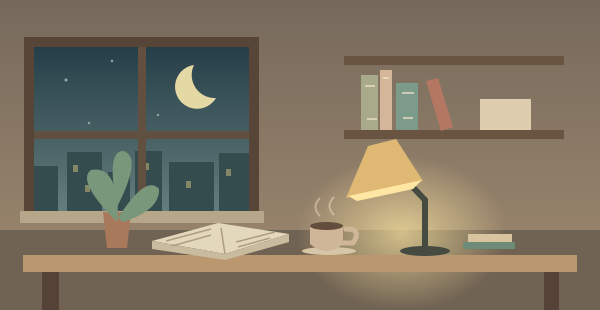

Trắc nghiệm có giải thích, flashcard và điền từ. Tự nhớ trước khi xem đáp án, rồi quay lại đúng những câu bạn còn yếu.

Bắt đầu khi bạn làm câu đầu tiên. Dành thời gian ngủ và nghỉ giữa các lượt ôn.
Nhạc có sẵn được tổng hợp trên máy, không cần Internet. Nhạc chọn từ máy cần chọn lại khi mở trang lần sau.